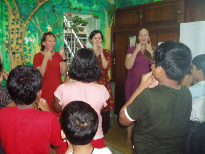
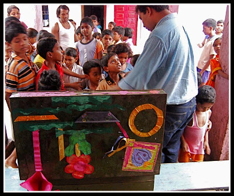
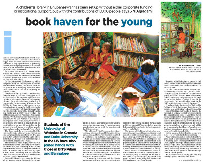

Bakul Foundation started with a Library Movement in Odisha and till now operates without any separate office but from the libraries. The Bakul Children’s Library in Bhubaneswar is the first outcome of that movement. The library set up after a successful online campaign to donate books, stands testimony to the power and potency of volunteerism. It has been set up and is running without any institutional funding but with book donations and small contributions of many individuals. It is, nevertheless, widely regarded by experts as one of the best children’s libraries in the country and has developed into a Resource Centre for children’s books. The Library in Satyanagar, Bakul Children’s Library has already developed into a Resource Centre with many of the best children’s books from all over the world.
You can see pictures of the Library by clicking on this image:
The Library housed at 16 Satyanagar, Bhubaneswar is now a General Library for everyone and has over 20,000 books. Many artists also contributed in making the library one of the most attractive in the country.
Listen here to a Podcast at Idealist.org, the popular website on the development sector Here
The Library is FREE for all, and is open Tuesday to Sunday from 2PM to 9PM. There are regular activities for children every Saturday and Sunday. There are many special activities for both young and old at the library such as Story Telling by celebrities and people from all around the world, Book Launches, Author Interactions, Cultural Programmes, workshops etc.
See pictures of different activities at the Library by clicking this image:

There are public libraries now in Bhubaneswar, Cuttack and Paralekhamundi, the villages of Godibari (near Chandaka Forest Main Gate) and Biswanathpur (near Balipatna) and 15 Model School Libraries in Bhubaneswar, Ganjam and Malkangiri. Volunteers of Bakul have also run a Mobile Library that is on Janpath every Sunday morning in Bhubaneswar as a part of Raahgiri. The Mobile Library has been on 6 day camps in 24 villages of Ganjam and at the YMCA camp for refugees from Kandhamal in 2009.
You can see images of other libraries by clicking on this image:

You can read reports in the Media by clicking on this image:
